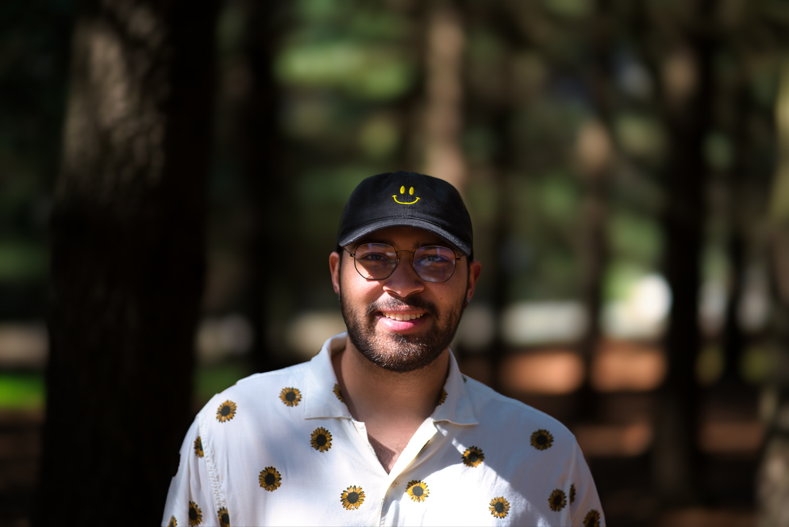

Journalism degree from Scranton. Content, video, audio, a bit of code. I pick things up fast. Chester County, PA.

Based in Chester County, PA. Journalism was the degree. I pick things up fast and that combination has taken me to a lot of different kinds of work.
I perform with the Players Club of Swarthmore and spent some time recording and arranging with the Scrantones at Scranton.
University of Scranton — B.S. Journalism & Electronic Media
Social media production for a 100K+ follower university account. Content and automation work at iPipeline. Video, photography, and graphic design across personal and professional projects.
Looking for marketing coordinator, content, or digital communications roles in Greater Philadelphia. Open to remote.